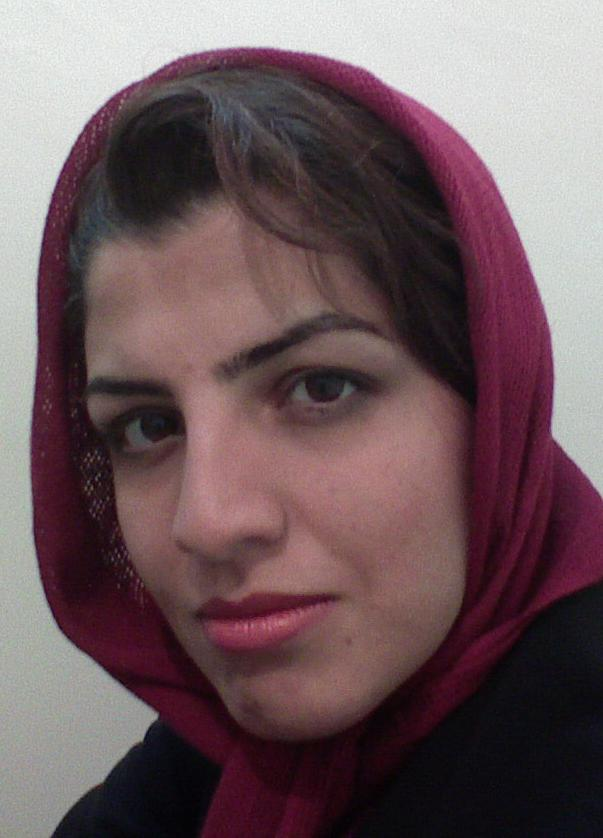

پذيرش > تریبون > مقالات > صدای برابرخواهی متوقف نمی شود


 صدای برابرخواهی متوقف نمی شود صدای برابرخواهی متوقف نمی شود
21 آبان 1386 - نوشین کشاورز نیا - نسخه قابل چاپ
به رغم شنیدن توقف حکم دلارام علی برای بررسی مجدد پرونده نمی تواند کتمان کرد که روزهای بدی را از سر می گذرانیم. هر آن شنیدن خبر دستگیری و برخوردهای غیرقانونی با حرکت مسالمت جویانه و برابری خواهانه زنان و مردان کشورمان را انتظار می کشیم. وقایع این چند ماه اخیر مثل فیلمی از جلو چشمانم رد می شوند. به کارگاه آموزشی حقوق زنان در خرم آباد لشکر کشی می کنند، پاکترین و آزاده ترین مردم این سرزمین را به فساد و عیاّشی متهم می کنند و با شیوه ای توهین آمیز و زننده آنها را بازداشت می کنند... در زندگی شخصی افراد سرک می کشند، مکالمات تلفنی را کنترل می کنند، به جرمی نامشهود و به اصطلاح منکرانی آنها را بازداشت می کنند و به خاطر فعالیت برابری خواهانه در کمپین مورد بازخواست قرار می دهند.... اعضا را با تهدید و احضار تلفنی بازجویی می کنند.... مادری را از حق مسلم دیدار فرزند بی گناه و دربندش محروم می کنند، او را دشنام می دهند و کتک می زنند... این وقایع و دهها واقعۀ دیگر ُکه از ابتدای آغاز به کار کمپین بر ما گذشته را کنار هم قرار می دهم و مطمئن می شوم که حالا باید انتظار خبرهای دردناکتر را داشته باشیم. فشارها و برخوردهای نامعقول، بازداشت ها و احکام سنگین تعلیق و تعزیر خط سیر داستانی است که از سر عناد با حقوق زنان آزادیخواه این دیار پرداخته شده و در ادامه به اجرای حکم سنگین و ناعادلانه «دلارام علی» رسیده است که آن هم پایان ماجرا نیست. هر چند شنیدن این خبر و اخباری از این دست هیچگاه برایمان عادی نمی شود اما دیگر از شنیدن آن غافلگیر نمی شویم چرا که تجربه ثابت کرده است کاروان خبرهای ناگوار در راه است و کم تحملی طراحان این برخوردها نیز بیش از این.
اما به راستی در پس پرده این نقشه های به ظاهر عجیب و غریب چه هدفی نهفته است؟ بازیگران این حرکت فرخنده و شورآفرین را چگونه می خواهند متوقف کنند؟ به باور من، فشارها و کنش های به ظاهر متفاوت، تنها یک هدف دارند و آن پراکندن تخم ترس و ارعاب میان فعالان و به خصوص اعضای جوانتر و کم سن و سالتر کمپین است. نسل های قدیمی تر احتمالاً تصمیم خود را مدتها پیش برای قدم گذاردن در راه دشوار ولی شیرین برابری زنان و مردان گرفته اند. پس باید بیش از همه چهره های جوان تر و ناشناخته را با روش های مختلف و ظاهراً غافلگیرانه مورد آزار و تهدید قرار دهند، آنها را با حکم های تعلیق طولانی مدت فلج کنند و با فشار تازیانه و زندان به اصطلاح تأدیب. این شاید همان استراتژی ترساندن و کشتن است، بدرستی «ترس برادر مرگ» است چرا که با غلبه ترس بر انسان زندگی از حرکت می ایستد. ترساندن فعالان زنان از طریق زندانی کردن، تعلیق و محروم کردن شان از تحصیل و قرار دادن خانواده هایشان در مقابل آنان به ابزاری برای رسیدن به مرگ یک حرکت تصور شده است. اما به نظر من، آنچه از منظر طراحان استراتژی ترس بی توجه مانده این است که پاسخ این معادله همیشه مرگ و نیستی نیست بلکه شور، نشاط و زندگی هم هست. تعجب من از رفتار کسانی است که ابزار ارعاب را چون دهه های قبل کارا می دانند در حالی که در زمانی که دامنه اطلاع رسانی و شتاب آن چنان شده که هیچ حرکتی از دیدگان تیزبین برابر خواهان جهان نایپدا نمی ماند و آنان به مدد اطلاع رسانی های گسترده از حال یکدیگر باخبر می شوند، طراحان معادله ارعاب به جای تجزیه و تحلیل وقایع و مشاهده خواسته های مدنی زنان و مردان تصمیماتی نابخردانه می گیرند.
یکی از آموزه های کمپین یک میلیون امضا برای ما این بوده است که این کمپین به یک یا دو چهره شناخته شده و پیشکسوت متکی نیست، در کمپین یک میلیون امضا فعالیت همه اعضا ارزشمند است وقابل حمایت. در این کمپین سطح و سلسله مراتبی در کار نیست تا برخی در رأس و برخی در زیر قرار گیرند، هر کدام ار اعضا هر چقدر هم جوان و ناشناخته باشند و در هر کجای این آب و خاک بسر برند حتی اگر تنها یک روز از عمر فعالیتشان در این حرکت برابری خواهانه گذشته باشد به یک میزان مورد حمایت و پشتیبانی سایرین قرار می گیرند و هیچ تبعیضی در خبررسانی و جلب حمایت افکار عمومی برای نجات آنان وجود ندارد. علاوه بر این، رویاها و آرزوهای ما را، که دیگر نسل و کسوت نمی شناسد، نمی توان در زندانی از آهن و سنگ محبوس کرد؟ تاکنون غل و زنجیری ساخته نشده که قدرت سرکوب و دربند کردن این همه آرزو و رویای مشترک را داشته باشد! با وجود کنترل های شدید و سرکشیدن های مداوم در زندگی شخصی افراد، وجود زنان و دختران جوان برابر خواه گرمی بخش شور، هیجان و عشق به زندگی و برابری انسانهاست! با به بند کشیدن دلارم ها، روناک ها و هانا ها نه تنها صدای برابر خواهی متوقف می شود که حتی شور زندگی و برابرخواهی زنان و مردان در فضای سرد و یخ زده زندان هایمان نیز طنین انداز خواهد شد.
برخورد غیر قانونی با قانون
برخورد با فعالان جنبش زنان و کمپین به خاطر تحمع مسالمت آمیز 22 خرداد، آموزه دیگری نیز دارد. حرکت های مسالمت جویانه و تجمع قانونی زنان را سرکوب می کنند تا نشان دهند ماده ای ازقانون اساسی کشورمان که برگزاری تجمعات مسالمت آمیز را بدون کسب مجوز میسر می داند مانند دهها قانون دیگر قابل استهزا و ریشخند است، تا نشان دهند اوراق قانون اساسی تنها ورق پاره هایی بی ارزش هستند! باید پرسید تا این حد توهین و بی حرمتی به قانونی که ُدر روزگارانی نه چندان دور از تصویب منتخبان این ملت گذشته است و انسانهای بی گناه بسیاری برای به ثمر نشستن آن قربانی شده اند چگونه اینطور راحت می تواند به سخره گرفته شود؟ آیا ملعبه کردن سندی چنین باارزش، امنیت ملی کشور مان را به خطر می اندازد یا برابرخواهی حقوقی زنان و مردان؟
خیلی وقت است که چماق زن ستیزی بالا آمده است هرچند کسی از جای خود تکان نخورده است و خیلی وقت است که بر فرق زنان و مردان برابرخواه و آزادیخواه فرود آمده و آب از آب تکان نخورده است. حل این معادله ساده تنها با عشق امکان پذیر است، نتیجه چوب و چماق همیشه ارعاب و انزوا نیست، توان و عشق مضاعف است برای ادامه راهی که آغاز شده است. دیدن ستم و بی عدالتی انگیزه ها را قوی تر می کند آنچنان که دیدن همین ظلم ها و بی عدالتی ها در کانون های به اصطلاح گرم خانواده بود که ما را در چنین مسیری قرار داد. من اطمینان دارم تعلیق، زندان، تحقیر،ُ توهین، تهدید ...سخت است دوری از دوستان و عزیزان سخت است اما سخت تر از قوانین تبعیض آمیزی نیست که هر روز و هر زمان در زندگی مان جاری و ساری است و حتی برای تثبیت تبعیض مضاعف آن قوانین کاتالیزور و تسهیل کننده ای چون به اصطلاح حمایت خانواده از سوی دولت "زن دوستمان" پیشنهاد می شود. به قول دوستی نازنین در کمپین، "سخت تر از آنچه در خانه ها بر زنان دردکشیده مان می گذرد نیست."
ارسال به
بالاترین
،
توییتر
،
فریندفید
،
فیسبوک
در همين بخش :
 دهمین دورۀ مراسم تندیس صدیقه دولت آبادی ۱۳۹۲ دهمین دورۀ مراسم تندیس صدیقه دولت آبادی ۱۳۹۲
کارت پستالهایی به بهانهی هشت مارس و به یاد همهی مبارزین راه برابری
بیانیه بیش از 350 تن از مدافعان حقوق زنان به مناسبت روز جهانی زن؛ زنان هر روز فرودستتر میشوند
لباسی که برای تن ما دوخته اند! /اعظم بهرامی
چالشها و چشمانداز فعالیت مدنی زنان
ديگر بخش ها :
طرح یک میلیون امضا
|
مقالات
|
سایت نوشته ها
|
اخبار
|
گزارش كمپين
|
گفت و گو
|
علیه سکوت
|
كوچه به كوچه
|
نامه های شما
|
گزارش ویژه
|
گفتگو با اعضا
|
ویژه سالگرد کمپین
|
تصویر برابری
|
دل آرام علی
|
تریبون
|
مقالات
|
تاریخ شفاهی
|
خارج از چارچوب
|
کتابخانه
|
درباره کمپین
|
کمپین در شهرها
|
کمپین در بند
|
صدای تغییر
|
ویژه 22 خرداد
|
لایحه حمایت از خانواده
|
گالری
|
عشا مومنی
|
امیر یعقوبعلی
|
خدیجه مقدم
|
راحله عسگری زاده و نسیم خسروی
|
پروین اردلان،جلوه جواهری، مریم حسین خواه، ناهید کشاورز
|
زینب پیغمبرزاده
|
سعیده امین، سارا ایمانیان، محبوبه حسین زاده، ناهید کشاورز و همایون نامی
|
احترام شادفر
|
نسیم سرابندی زاده،فاطمه دهدشتی
|
وبلاگ مهمان
|
پرونده خرم آباد
|
دستگیری ها
|
مریم مالک
|
پرستو اللهیاری
|
مهرنوش اعتمادی
|
سمیه رشیدی
|
Other Languages
|
همراهان
|
«فراخوان کمپین ده روز با بهاره هدایت»
| English
|